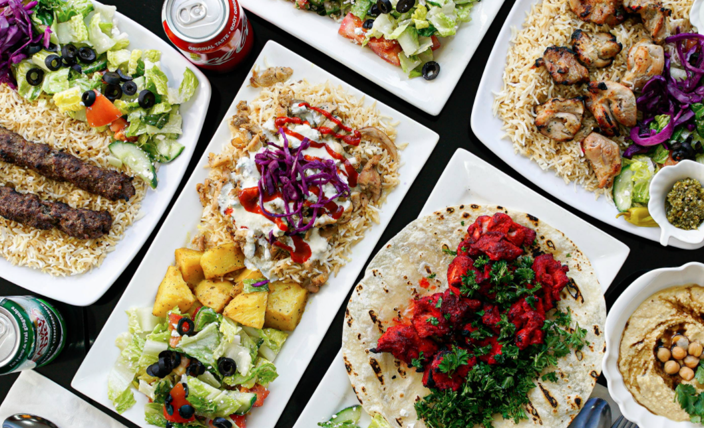

Started as a response to the pandemic, Melissa Clark's From the Pantry Series says goodbye.
Called From the Pantry, it was intended to provide recipes that were versatile enough to cut down on anxiety-ridden trips to the supermarket, while still being satisfying enough to eat and calming to cook. The recipies, written narratively, were a real-time kitchen diary, based on what I had in my own pantry, and created with an eye toward giving readers wiggle room to use what was in theirs.